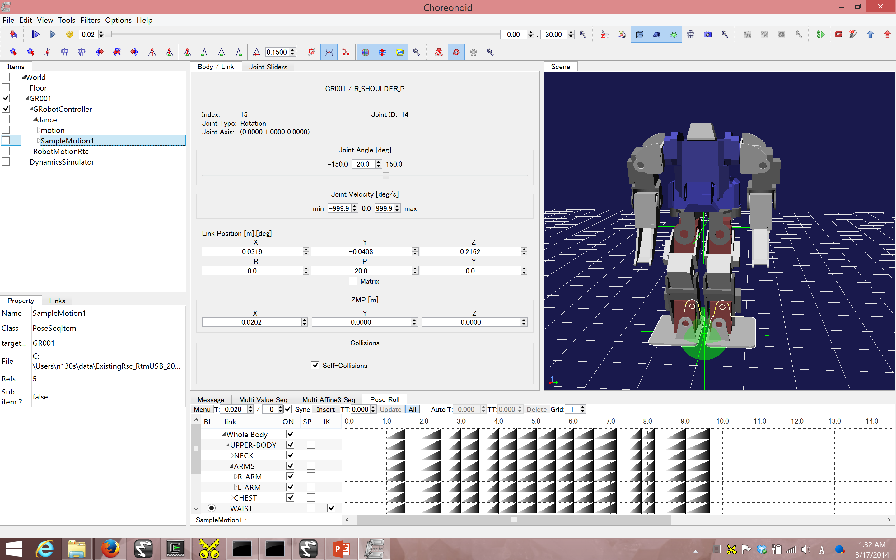
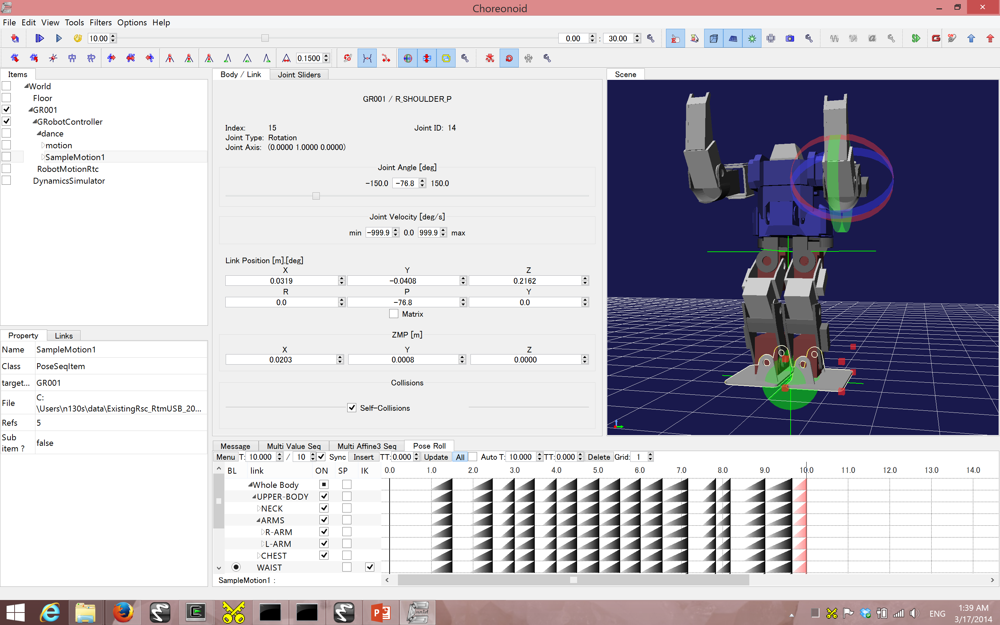

(Demo 3) Create Robot Motions (Choreonoid)
- Add custom motion to an existing one on Choreonoid
You’ll see very basic operation for Choreonoid. See the following links for more.
- For detail and the usage more in detail, see [1]
- About changing motion, see [2]
Your current directory is assumed to be the home of the USB unless specified.
- Run .demo/BatchFiles/Choreonoid-GRobot.bat GUI for Choreonoid launches.
./demo/BatchFiles/Choreonoid-GRobot.bat
- On Choreonoid GUI, read an existing motion by the following.
(English ver software) “File” –> “Open” –> “Pose Sequence” –> Choose GR001SampleMotion1.pseq
(日本語版) “ファイル” –> “読み込み” –> “ポーズ列” –> Choose GR001SampleMotion1.pseq
If the steps above don’t let you see the file, it’s there:./demo/Choreonoid-1.1/share/projects/GR001SampleMotion1.pseq
- The motion in the selected file should appear on the pane on the left side of Choreonoid. Click it (see the image below).

- On “PoseRoll” pane on Choreonoid, move the cursor (thin vertical line on the timeline) twhere you’d like to add the motion. Say, at the end of the existing motion.
- Right click on the robot’s pane, select “Edit Mode”. This allows moving robot parts.
- Move which ever part on the robots however you want :)
- Click “Insert”／”Current Motion” on “PoseRoll” pane. The newly added porting will be highlighted in red.
- Do not forget to save.

- It’s your choice to close Choreonoid or not once the work is saved.
Go back to index | Go to next